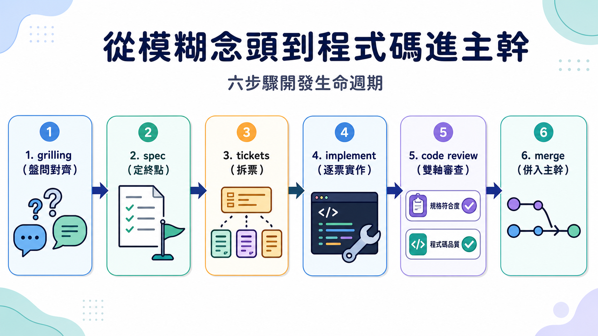
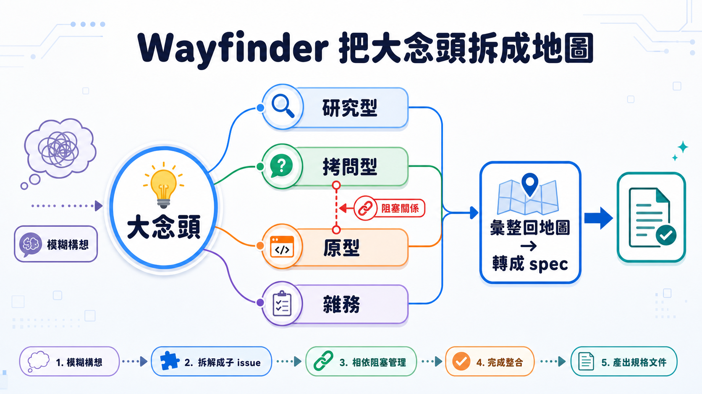

一個工具叫 two PRD，裡面卻從來沒人在寫產品需求文件。它做的事其實是規格。這個錯位的名字掛了多久？久到作者自己說「這件事煩了我很久」。改名的那一刻，帶來的不是尷尬，而是如釋重負。這聽起來像命名強迫症，但仔細想，一個被錯誤命名的工具，會持續把使用者的思考導向錯的方向——這比表面上「多了幾個新指令」值得談得多。
這是 Matt Pocock 的 skills 專案迎來 1.1 版的更新。這套技能包是給 AI coding agent 用的工作方法，目的是把寫程式從「跟 AI 隨口聊需求」變成一套有結構、可交接的流程。累積至今，它已經拿下 160K 顆星、在 skills.sh 上被下載超過 700 萬次——早已不是個人玩具，而是不少團隊實際仰賴的方法論。所以這次更新，與其說是版本迭代，不如說是作者對「這套方法該長什麼樣子」的再一次修正。
名字錯了，思考也會跟著錯
兩個改名的分量，其實比表面看起來重。two PRD 改成 two spec，因為 PRD 天生綁定「這是在描述一個產品」的預設，而團隊實際寫的東西往往更廣——可能純技術、可能不涉及產品決策、可能兩者交雜。用 PRD 這個框架硬套，內容就不斷外溢到框架容納不了的地方。two issues 改成 two tickets，理由更微妙：issue 這個詞天然帶著 GitHub、Linear 這些平台的影子，用久了會把思考侷限在「開一張票」的框架裡；ticket 則單純指「走向規格終點的一段旅程」，更中性。
代價是所有舊使用者得手動刪掉重裝，因為安裝工具不會自動判斷「PRD 資料夾」該理解成「spec 資料夾」。作者選擇承受這個一次性的遷移成本，理由很直接：命名如果是錯的，會持續誤導每一個使用它的人；遷移成本只需要付一次。
Grill 里最麻煩的 bug：模型分不清「事實」跟「決定」
Grill Me 和 Grill With Docs 讓 AI 反過來拷問使用者、把需求問清楚。但不少人回報一個怪現象：某些模型（尤其 Fable）會自己問自己，一邊探索程式碼庫一邊自問自答，完全繞過使用者。
作者的修法沒有加更複雜的規則，而是拆開兩個詞：事實，是你自己探索程式碼庫就能找到的東西；決定，則必須由使用者做。光是講清楚這條界線，自問自答的頻率就大幅下降。這揭露一個容易被忽略的問題——AI 分不清「可以自己查」跟「必須由人決定」，不是因為它笨，而是沒人明確劃線時，語言模型傾向用同一套探索式口吻應付所有問題。人跟 AI 協作真正卡關的地方，往往不是「AI 懂不懂」，而是「AI 有沒有被告知決定權在誰手上」。同樣的邏輯也解釋了新加的確認閘門——「在我確認達成共識之前，不要執行計畫」——把決定權轉移變成一個顯性動作，而不是模型自己揣測的時機。
從一個模糊念頭，到程式碼進主幹

這次更新把原本鬆散的規劃流程，補完成一條完整的開發生命週期：先用 grilling 取代 plan mode，把過程中浮現的術語整理進詞彙表、把架構決策記下來；內容匯聚成一份 spec，定義終點；spec 拆成一張張 ticket，分散到多個 agent session；每張 ticket 交給極簡的 implement 技能——用 TDD 在談好的介面上寫測試、定期跑型別檢查、做完呼叫 code review 再提交分支。
Code review 這一步技術含量最高。它分兩軸並行審查：標準軸，程式碼是否符合這個 repo 自己的編碼規範；規格軸，是否忠實實現原始 issue 或 spec。真正有意思的是標準軸的新設計——作者重讀 Martin Fowler 的《Refactoring》後發現，書裡命名的那些壞味道：神秘命名、重複程式碼、特性依戀、資料泥團、訊息鏈，因為這本書太經典，早就深植在語言模型的先驗知識裡。你不需要教模型什麼是訊息鏈，只要在提示詞裡點名這個詞，模型就會用內化的判斷標準去對照程式碼，甚至主動回報「我發現了幾處訊息鏈」。成本大概十行提示詞，作者測試兩週後說「離譜地有用」——與其發明新詞彙描述你要的品質標準，不如借用已經寫進大量訓練語料、模型早就懂的詞。
Wayfinder：當一個念頭大到一個 session 裝不下

這次分量最重的新東西，是一個叫 Wayfinder 的技能。它解決的問題是：有些念頭一開始就模糊，而且大到不可能在一次 session 想清楚——你會撐爆模型的聰明區間，甚至撐爆上下文視窗。過去只能用 Grill With Docs 硬撐，自己盯著什麼時候該收尾、該把資訊交接下去，這份管理負擔全落在人身上。
Wayfinder 把地圖存進 GitHub issue，變成團隊共享、隨時可協作的產物。影片裡的實例，是討論要不要把 AI SDK 拉進一個專案當依賴——目前沒有任何決定被做出來，所有待決事項拆成一張張子 issue，彼此有明確的阻塞關係：關鍵決定沒做之前，後面的決定都無法推進。每個子 issue 被控制在一次 session 做得完的大小，並分類標記：研究型（讓 agent 自己查資料回報）、拷問型（需要一次 grilling）、原型，以及不需要決策也做不了自動化的雜務。
原型這個分類值得多看一眼。與其空口討論介面該長怎樣，不如先做一個便宜、粗糙但具體的東西讓大家對著討論，把解析度整個拉高。作者特別提醒，任何涉及前端的工作幾乎都該預設用 Wayfinder。等所有子 ticket 關閉，資訊整合回地圖，原始 ticket 變成可追溯的第一手資料，整張地圖再照平常方式轉成 spec。作者說自己現在幾乎所有事都用 Wayfinder，包括規劃下一堂課程這種完全不寫程式碼的場合。
一個附帶但方向明確的簡化
TDD 技能也被簡化。舊版會規定具體步驟，先跟你確認要寫哪些測試再一步步帶著走——這跟多數人心目中「TDD 該有的樣子」不同：應該可以把技能丟給完全放著不管的 agent，它自己跑完全程。於是新版 TDD 技能砍成純參考資料，只規定順序（先紅燈再綠燈，一次一個切片），並把重構整個從迴圈裡拿掉，挪到 code review 階段處理，理由是這樣才不會讓實作階段一次扛太多任務。
回到最開頭那個改名決定。作者自己預測，這個版本會被記住的，大概就是 to spec 跟 to tickets 帶來的一次性麻煩——但他認為這是「好的摩擦」，因為名字終於取對了。真正該被記住的，或許反而是 Wayfinder 背後更安靜的轉變：當一件事大到一個人、一次對話裝不下，解法不是硬撐著塞進一次 session，而是拆成看得見進度、可以交接、留在共享空間裡的一張張地圖。當合作的一方是沒有記憶、隨時可能被重置的 agent 時，「進度該存在哪裡」本身就變成了系統設計要解決的核心問題。